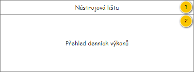
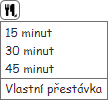
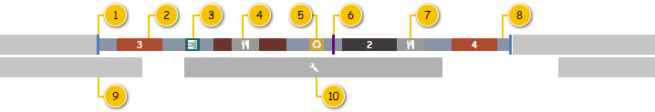
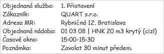
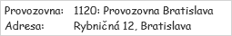
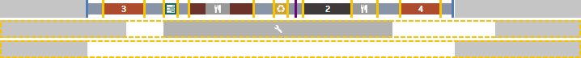

Stručný popis
Přehled denních výkonů slouží k zobrazení Denních výkonů, které odpovídají nastavení provedenému v nástrojové liště.
Uživatelské rozhraní
Rozložení
Drátový diagram

Přehled UI komponent
| Callout | Skupina |
|---|---|
| 1 | Nástrojová lišta |
| 2 | Přehled denních výkonů |
Nástrojová lišta
Drátový diagram
Poznámka: Náhled je pouze ilustrativní, směrodatný je popis uvedený v rámci tabulky.

Přehled UI komponent
| Pořadí | Komponenta | Nadpis | Typ komponenty | Příklad hodnoty | Hodnota | Výchozí hodnota | Formát | Zpřístupněná | Viditelná | Chování | Validace | Poznámka |
|---|---|---|---|---|---|---|---|---|---|---|---|---|
| 1 | Přidání denního výkonu | – | Button
| – | – | – | – | Vždy | Pokud má uživatel právo na editaci Denního výkonu (EDIT_RP_DAILY_ROUTES, viz Oprávnění na typ entity). Datum realizace nastavený v hlavní Nástrojové liště není v minulosti. | Spustí , na vstup UC jsou předány následující hodnoty:
| – | – |
| 2 | Upravení denního výkonu | – | Button
| – | – | – | – | Vždy | Pokud má uživatel právo na editaci Denního výkonu (EDIT_RP_DAILY_ROUTES, viz Oprávnění na typ entity). Je vybrán alespoň jeden Denní výkon. Poslední označený Denní výkon obsahuje alespoň jednu Položku denního výkonu (atribut Položky denního výkonu entity Denní výkon). | Spustí 200UC02: Upravit denní výkon, na vstup UC jsou předány následující hodnoty:
| – | Pokud je vybrán více než jeden Denní výkon, je na vstup UC předán ten, který byl označen jako poslední. Možnost a rozsah editace v rámci formuláře je dán stavem odpovídajícího Denního výkonu.
|
| 3 | Vyčištění denního výkonu | – | Button
| – | – | – | – | Vždy | Pokud má uživatel právo na editaci Denního výkonu (EDIT_RP_DAILY_ROUTES, viz Oprávnění na typ entity). Je vybrán alespoň jeden Denní výkon. Všechny označené Denní výkony jsou v jednom z uvedených stavů (atribut Stav):
| Spustí , na vstup UC jsou předány následující hodnoty:
| – | – |
| 4 | Odebrání denního výkonu | – | Button
| – | – | – | – | Vždy | Pokud má uživatel právo na editaci Denního výkonu (EDIT_RP_DAILY_ROUTES, viz Oprávnění na typ entity). Je vybrán alespoň jeden Denní výkon. Poslední označený Denní výkon splňuje následující podmínky:
| Spustí 200UC03: Odebrat denní výkon, na vstup UC jsou předány následující hodnoty:
| – | Pokud je vybrán více než jeden Denní výkon, je na vstup UC předán ten, který byl označen jako poslední. |
| 5 | Schválení denního výkonu | – | Button
| – | – | – | – | Vždy | Pokud má uživatel právo na editaci Denního výkonu (EDIT_RP_DAILY_ROUTES, viz Oprávnění na typ entity). Je vybrán alespoň jeden Denní výkon. Poslední označený Denní výkon je v jednom z uvedených stavů (atribut Stav):
| Spustí 200UC37: Schválit denní výkon, na vstup UC jsou předány následující hodnoty:
| – | Pokud je vybrán více než jeden Denní výkon, je na vstup UC předán ten, který byl označen jako poslední. |
| 6 | Zrušení schválení denního výkonu | – | Button
| – | – | – | – | Vždy | Pokud má uživatel právo na editaci Denního výkonu (EDIT_RP_DAILY_ROUTES, viz Oprávnění na typ entity). Je vybrán alespoň jeden Denní výkon. Poslední označený Denní výkon je v jednom z uvedených stavů (atribut Stav):
| Spustí 200UC38: Zrušit schválení denního výkonu, na vstup UC jsou předány následující hodnoty:
| – | Pokud je vybrán více než jeden Denní výkon, je na vstup UC předán ten, který byl označen jako poslední. |
| 7 | Označení všech denních výkonů | – | Button
| – | – | – | – | Vždy | Vždy | Označí všechny Denní výkony v přehledu. | – | – |
| 8 | Vložení přestávky | – | Button
| – | – | – | – | Vždy | Pokud má uživatel právo na editaci Denního výkonu (EDIT_RP_DAILY_ROUTES, viz Oprávnění na typ entity). Je vybrán alespoň jeden Denní výkon. Poslední označený Denní výkon je v jednom z uvedených stavů (atribut Stav):
| – | Pokud je vybrán více než jeden Denní výkon, je na vstup UC předán ten, který byl označen jako poslední. | |
| 9 | Vložení likvidačních míst | – | Button
| – | – | – | – | Vždy | Pokud má uživatel právo na editaci Denního výkonu (EDIT_RP_DAILY_ROUTES, viz Oprávnění na typ entity). V hlavní Nástrojové liště je nastaven jeden z dále uvedených Typů dopravy:
Je vybrán alespoň jeden Denní výkon. Všechny označené Denní výkony jsou v jednom z uvedených stavů (atribut Stav):
| – | – | |
| 10 | Vložení rozdělení směny | – | Button
| – | – | – | – | Vždy | Pokud má uživatel právo na editaci Denního výkonu (EDIT_RP_DAILY_ROUTES, viz Oprávnění na typ entity). Je vybrán alespoň jeden Denní výkon. Poslední označený Denní výkon je v jednom z uvedených stavů (atribut Stav):
| Spustí , na vstup UC jsou předány následující hodnoty:
| – | Pokud je vybrán více než jeden Denní výkon, je na vstup UC předán ten, který byl označen jako poslední. |
| 11 | Změna provozní doby | – | Button
| – | – | – | – | Vždy | Pokud má uživatel právo na editaci Denního výkonu (EDIT_RP_DAILY_ROUTES, viz Oprávnění na typ entity). Je vybrán alespoň jeden Denní výkon. Poslední označený Denní výkon je v jednom z uvedených stavů (atribut Stav):
| Spustí 200UC33: Upravit provozní dobu denního výkonu, na vstup UC jsou předány následující hodnoty:
| – | Pokud je vybrán více než jeden Denní výkon, je na vstup UC předán ten, který byl označen jako poslední. |
| 12 | Nastavení alokace na servis | – | Button
| – | – | – | – | Vždy | Pokud má uživatel právo na editaci Denního výkonu (EDIT_RP_DAILY_ROUTES, viz Oprávnění na typ entity). Je vybrán alespoň jeden Denní výkon. Poslední označený Denní výkon je v jednom z uvedených stavů (atribut Stav):
| Spustí , na vstup UC jsou předány následující hodnoty:
| – | Pokud je vybrán více než jeden Denní výkon, je na vstup UC předán ten, který byl označen jako poslední.
|
| 13 | Vytištění sestavy POVOS | – | Button
| – | – | – | – | Vždy | Je vybrán alespoň jeden Denní výkon. Všechny označené Denní výkony jsou v jednom z uvedených stavů (atribut Stav):
| Spustí , na vstup UC jsou předány následující hodnoty:
| – | – |
| 14 | Vytištění prázdné sestavy POVOS | – | Button
| – | – | – | – | – | Spustí , na vstup UC jsou předány následující hodnoty:
| – | – | |
| 15 | Obnovit data | – | Button
| – | – | – | – | Vždy | Vždy | Načte aktuální data pro přehled. | – | – |
| 16 | Zobrazit v mapě pouze označené | – | ToggleButton
| – | Počet právě označených položek v přehledu denních výkonů. | Ve výchozím stavu není tlačítko stisknuto. | Vždy | Vždy | Pokud je tlačítko již stisknuto, není po dalším stisknutí provedena žádná akce. Jinak dojde k nastavení tlačítka do stavu „stisknuto“ a jsou provedeny následující akce:
V rámci ovládacího prvku je dále možné zrušit právě označené položky v přehledu – k tomu slouží tlačítko (ikona: ra-cross), viz drátový diagram. Po stisknutí tohoto tlačítka tedy není označena žádná položka přehledu. | – | V mapě je pak zvýrazněn poslední označený Denní výkon. Pokud je zvolena možnost Zobrazit v mapě pouze označené (tlačítko je stisknuto) a zároveň není označen žádný Denní výkon, jsou v mapě zobrazeny všechny v přehledu obsažené Denní výkony (chování vychází z FLWW2). | |
| 17 | Zobrazit v mapě vše | – | ToggleButton
| – | Počet všech načtených položek v přehledu denních výkonů. | Ve výchozím stavu je tlačítko stisknuto. | Vždy | Vždy | Pokud je tlačítko již stisknuto, není po dalším stisknutí provedena žádná akce. Jinak dojde k nastavení tlačítka do stavu „stisknuto“ a jsou provedeny následující akce:
| – | V mapě je pak zvýrazněn poslední označený Denní výkon. |
Chování
Vložení přestávky
Tlačítko pro vložení přestávky je doplněno o kontextovou nabídku, kde může uživatel zvolit požadovanou délku přestávky – viz obrázek. Dostupné jsou pak následující možnosti:
- 15 minut,
- 30 minut,
- 45 minut,
- Vlastní přestávka.
Po výběru jedné z možností je spuštěn , na vstup UC jsou předány následující hodnoty:
- Denní výkon: právě označený Denní výkon.
- Délka přestávky: konkrétní délka trvání přestávky (15, 30, 45) nebo NULL (vlastní přestávka) – dle výběru v kontextové nabídce.
Pokud je vybrán více než jeden Denní výkon, je na vstup UC předán ten, který byl označen jako poslední.

Vložení likvidačních míst
Cílem je vložit do Denního výkonu všechna Likvidační místa, která mají být v rámci tohoto Denního výkonu navštívena (tedy taková, která jsou obsažena ve vložených Položkách denního výkonu typu Objednaná služba).
Poznámka: Vzhledem k tomu, že musíme pracovat i s kódem nakládání, pracujeme dále s odpovídajícími Lokacemi objednané služby typu Likvidační místo (atribut Typ lokace). Ty obsahují jak informaci o Likvidačním místu, tak o kódu nakládání. Kód nakládání nakonec není evidován jako číselník.
Systém tedy nejprve nalezne všechny Lokace objednané služby daného typu – v rámci právě zkoumaného Denního výkonu projde všechny Položky denního výkonu typu Objednaná služba (atribut Typ položky), ve kterých zkoumá obsažené Lokace objednané služby typu Likvidační místo (atribut Typ lokace entity Lokace objednané služby – atribut Lokace objednané služby entity Objednaná služba – atribut Objednaná služba entity Položka denního výkonu).
Při vyhodnocení nalezených záznamů dochází ke „slučování“ Lokací objednaných služeb. Pokud jsou splněny všechny dále uvedené podmínky zároveň, je pro skupinu Lokací objednané služby vložen pouze jeden společný záznam:
- Hodnota atributu Likvidační místo je shodná.
- Hodnota atributu Kód nakládání je shodná.
Následně jsou Likvidační místa postupně vkládána do Denního výkonu, a to v pořadí, které je určeno následovně (vychází z algoritmu pro generování Lokací objednané služby – viz Více likvidačních míst):
- Je získána adresa poslední Lokace objednané služby v Denním výkonu, která má být provedena (mimo Start a Cíl).
- Pokud je k dispozici více než jedna Lokace objednané služby typu Likvidační místo:
- Je získána vzdálenost z nalezené adresy poslední Lokace objednané služby v Denním výkonu (viz krok 1), která má být provedena, do všech nalezených Likvidačních míst (atribut Likvidační místo entity Lokacemi objednané služby).
- Je vybrána Lokace objednané služby s Likvidačním místem s nejkratší nalezenou vzdáleností.
- Pokud je k dispozici více než jedna nezařazená Lokace objednané služby typu Likvidační místo:
- Je získána vzdálenost z posledního zařazeného Likvidačního místa do všech nezařazených Lokací objednaných služeb typu Likvidační místo.
- Je vybrána Lokace objednané služby s Likvidačním místem s nejkratší nalezenou vzdáleností. Návrat na krok 3.
- Je vybráno poslední nezařazená Lokace objednané služby s Likvidačním místem.
V tomto pořadí pak probíhá postupné vkládání jednotlivých Likvidačních míst (s daným kódem nakládání) do Denního výkonu – je spouštěn , na vstup UC jsou předány následující hodnoty:
- Denní výkon: právě zkoumaný Denní výkon.
- Likvidační místo: hodnota atributu Likvidační místo právě zkoumané Lokace objednané služby (viz získané pořadí dříve).
- Poznámka: V průběhu vkládání Likvidačních míst není volán algoritmus pro aktualizaci trasy.
- Kód nakládání: hodnota atributu Kód nakládání právě zkoumané Lokace objednané služby (viz získané pořadí dříve).
Následně je provedena aktualizace trasy Denního výkonu – je spuštěn 200UC29: Získat trasu denního výkonu, na vstup UC jsou předány následující hodnoty:
- Denní výkon: právě zkoumaný Denní výkon.
Tento postup je pak proveden pro všechny Denní výkony, které jsou vybrány v přehledu.
Přehled denních výkonů
Přehled je pak řazen následovně:
- Nejprve jsou uvedeny Denní výkony s přiřazeným vozidlem. Ty jsou řazeny abecedně dle SPZ tohoto Vozidla (atribut RZ entity Vozidlo – atribut Vozidlo entity Denní výkon).
- Dále jsou uvedeny Denní výkony, u kterých není přiřazeno vozidlo. Ty jsou řazeny dle ID konkrétního Denního výkonu.
V rámci přehledu je možné označit požadovaný Denní výkon, a to několika způsoby:
- Označení kliknutím na odpovídající řádek přehledu levým tlačítkem myši (mimo tlačítka i jiné interaktivní komponenty). Pokud uživatel drží klávesu Ctrl, může označit více Denních výkonů zároveň.
- Označení systém jako reakce na provedenou akci (např. označení Denního výkonu v rámci Mapy zobrazující denní výkony a podobně).
Pokud není v rámci přehledu načten ani jeden Denní výkon:
- Pokud jsou v rámci obrazovky splněny vstupní podmínky pro spuštění 202UC08: Generovat denní výkony mimo plánované období (viz 200UI01: Nástrojová lišta), je zobrazen následující text: Žádný denní výkon není k dispozici. Pokud chcete pokračovat v plánování, je nutné denní výkony vygenerovat ručně.
- Jinak je zobrazen následující text: Žádný denní výkon není k dispozici.
Drátový diagram

Přehled UI komponent
| Sloupec | Nadpis | Typ komponenty | Příklad hodnoty | Hodnota | Výchozí hodnota | Formát | Možnosti sloupce | Zpřístupněná | Viditelná | Chování | Validace | Poznámka |
|---|---|---|---|---|---|---|---|---|---|---|---|---|
| Indikace stavu | – | TextBox | – | Entita Denní výkon. | – | Hodnota je reprezentována ikonou dle stavu Denního výkonu (atribut Stav):
| – | Nikdy | Vždy | Pokud je zobrazena ikona a uživatel na ni najede myší, je zobrazen ToolTip s dříve uvedeným textem. | – | Jedná se o indikaci stavu z pohledu plánování, nejsou tedy rozlišeny stavy dle realizace konkrétního Denního výkonu. |
| Vozidlo | Vozidlo | Panel vozidla | 4A5 1468 | Entita Denní výkon. | – | – | – | Pouze přes tlačítka v rámci panelu. | Vždy | – | – | – |
| Použití přívěsu | Ikona: ra-trailer. | CheckBox | TRUE | Entita Denní výkon. | FALSE | – | Pokud stav Denního výkonu nabývá jedné z uvedených hodnot:
| Pokud je v hlavní Nástrojové liště nastaven Typ dopravy na jednu z uvedených hodnot:
| Použití přívěsu | – | – | |
| Diagram | Časová osa | Diagram | – | – | – | – | – | Pokud stav Denního výkonu nabývá jedné z uvedených hodnot:
| Vždy | – | – | Časová osa vychází z jejího obecného popisu – viz . |
| Ujetá vzdálenost | km | TextBox | 268 | Entita Denní výkon. | – |
| – | Nikdy | Vždy | – | – | Výpočet ujeté vzdálenosti je proveden v rámci 200UC29: Získat trasu denního výkonu. |
| Doba jízdy | Čas | TextBox | 7:30 | Entita Denní výkon. | – |
| – | Nikdy | Vždy | – | – | Výpočet doby jízdy je proveden v rámci 200UC29: Získat trasu denního výkonu. |
Chování
Panel vozidla
Panel slouží k zobrazení informací o Vozidle v přehledu Denních výkonů a umožňuje spuštění dalších akci pro odpovídající Denní výkon. Vstupem panelu je pak instance entity Denní výkon, která je povinným vstupním parametrem.
Drátový diagram

Přehled UI komponent
Poznámka: Jednotlivé komponenty mají pevně danou pozici v rámci panelu. Pokud je některá z nich skryta, nedochází ke změně pozice ostatních komponent.
| Callout | Komponenta | Nadpis | Typ komponenty | Příklad hodnoty | Hodnota | Výchozí hodnota | Formát | Zpřístupněná | Viditelná | Chování | Validace | Poznámka |
|---|---|---|---|---|---|---|---|---|---|---|---|---|
| 1 | Barevný pruh pro rozlišení denního výkonu v mapě | – | – | – | – | – | Barva pruhu vychází z mapy s denními výkony – v mapě jsou při vykreslení Denním výkonům přiřazeny určité barvy, ty odpovídají i v rámci tohoto prvku – viz Barva trasy denního výkonu. | – | Pokud odpovídající Denní výkon obsahuje alespoň jednu Položku denního výkonu (atribut Položky denního výkonu). | – | – | Pokud není obsažena ani jedna Položka denního výkonu, není Denní výkon v mapě zobrazován. |
| 2 | Identifikace vozidla | – | Label | 5AX 2548 | Entita Denní výkon. | – | Pokud není hodnota k dispozici a zároveň je k Dennímu výkonu přiřazeno Vozidlo (atribut Vozidlo), je zobrazen zástupný text: licensePlatePlaceholderText, viz . Pokud není hodnota k dispozici a zároveň není splněna předchozí podmínka, je zobrazen zástupný text, viz Zástupný text vozidla. | – | Vždy | – | – | – |
| 3 | Zrušení přiřazení vozidla | – | Button
| – | – | – | – | Vždy | Pokud má uživatel právo na editaci Denního výkonu (EDIT_RP_DAILY_ROUTES, viz Oprávnění na typ entity). Pokud byl Denní výkon vytvořen uživatelem – hodnota atributu Vytvořen uživatelem je rovna TRUE. Pokud je na Denní výkon přiřazeno Vozidlo – hodnota atributu Vozidlo je různá od NULL. Pokud stav Denního výkonu nabývá jedné z uvedených hodnot:
| Spustí 200UC06: Odebrat vozidlo denního výkonu, na vstup UC jsou předány následující hodnoty:
Pokud je tlačítko zobrazeno a uživatel na něj najede myší, je zobrazena bublinková nápověda s pevně daným textem:
| – | Slouží jak pro změnu, tak i k přiřazení Vozidla k Dennímu výkonu. |
| 4 | Změna přiřazeného vozidla | – | Button
| – | – | – | – | Vždy | Pokud má uživatel právo na editaci Denního výkonu (EDIT_RP_DAILY_ROUTES, viz Oprávnění na typ entity). Pokud byl Denní výkon vytvořen uživatelem – hodnota atributu Vytvořen uživatelem je rovna TRUE. Pokud stav Denního výkonu nabývá jedné z uvedených hodnot:
| Pokud je k odpovídajícímu Dennímu výkonu přiřazeno vozidlo (hodnota atributu Vozidlo je různá od NULL): Spustí , na vstup UC jsou předány následující hodnoty:
Jinak: Spustí , na vstup UC jsou předány následující hodnoty:
Pokud je tlačítko zobrazeno a uživatel na něj najede myší, je zobrazena bublinková nápověda s pevně daným textem:
| – | – |
| 5 | Mapa denního výkonu | – | – | – | Entita Denní výkon. | – | – | – | Pokud je v rámci Denního výkonu obsažena alespoň jedna Položka denního výkonu (atribut Položky denního výkonu). | Pokud je zobrazena ikona a uživatel na ni najede myší, je zobrazena bublinková nápověda s mapou Denního výkonu, viz 200UI01: Mapa zobrazující vybraný denní výkon, na vstup je pak předán odpovídající Denní výkon. | – | Mapa přebírá své nastavení z mapy na obrazovce pro editaci denního výkonu, viz Mapa. |
Zástupný text vozidla
Může nastat situace, kdy k Dennímu výkonu není přiřazeno žádné Vozidlo (atribut Vozidlo). V takovém případě je potřeba zobrazit zástupný text, který nahrazuje identifikaci chybějícího Vozidla.
Zástupný text není k Dennímu výkonu ukládán. Je generován pro aktuálně zobrazená data. Formát je pak následující Vozidlo
Pořadové číslo je pak získáno tak, že se postupně prochází Denní výkony, kdy je pořadové číslo postupně inkrementováno. Řada pak začíná číslem 1.
Pokud dojde k přiřazení Vozidla k Dennímu výkonu a následně je přidán nový Denní výkon, není při získání pořadového čísla hledána mezera, ale pokračuje se ve stávající řadě.
Použití přívěsu
Uživatel může pro celý Denní výkon nastavit příznak, zda má být využit přívěs nebo ne – chování je pak uvedeno v tabulce.
| Nastavená hodnota | Chování |
|---|---|
| Má přívěs (TRUE) | Kliknutím dojde ke změně hodnoty na Nemá přívěs (FALSE) – je spuštěn , na vstup jsou předány následující hodnoty:
|
| Nemá přívěs (FALSE) | Kliknutím dojde ke změně hodnoty na Má přívěs (TRUE) – je spuštěn , na vstup jsou předány následující hodnoty:
|
Diagram
Nejdříve je uveden jednoduchý náhled na diagram, následně jsou jednotlivé části detailně popsány.
Drátový diagram

Přehled UI komponent
| Callout | Prvek | Popis |
|---|---|---|
| 1 | Místo začátku/konce trasy denního výkonu | Začátek/konec trasy Denního výkonu. |
| 2 | Objednaná služba | Položka denního výkonu obsahující Objednanou službu – obsahuje všechny obsažené Lokace objednané služby a cesty mezi nimi. |
| 3 | Provozovna | Položka denního výkonu obsahující Provozovnu – je představována dobou manipulace v tomto místě. |
| 4 | Přestávka v rámci objednané služby | Časový interval představující přestávku, která je umístěna v rámci Objednané služby. |
| 5 | Likvidační místo | Položka denního výkonu obsahující Likvidační místo – je představována dobou manipulace v tomto místě. |
| 6 | Rozdělení směny | Rozdělení směny, kdy dochází ke střídání posádky vozidla. |
| 7 | Přestávka | Časový interval představující přestávku. |
| 8 | Cesta mezi položkami | Cesta mezi mezi poslední Lokací objednané služby jedné Položky denního výkonu a první Lokací objednané služby druhé Položky denního výkonu. |
| 9 | Mimo provozní dobu | Časové intervaly představující období mimo provozní dobu. |
| 10 | Alokace na servis | Časový interval, kdy má Vozidlo naplánovaný servis. |
Interakce
V rámci přehledu Denních výkonů jsou pro jednotlivé Položky denního výkonu, Intervaly omezení denního výkonu a Lokace objednané služby dostupné interakce, které postupně popsány. Nejprve je pak uvedena přehledová tabulky s jednotlivými prvky, z které je v případě potřeby odkazováno dále.
| Prvek | Upřesnění | Zobrazeno v diagramu | Zvýraznit po najetí myší | Povolen Drag&Drop | Kontextová nabídka | Formát textu pro ToolTip | Příklad textu pro ToolTip | Poznámka | |
|---|---|---|---|---|---|---|---|---|---|
| Interval omezení denního výkonu | Atribut Typ omezení nabývá hodnoty Mimo provozní dobu. | Provozní doba: Jedná se o atributy entity Interval omezení denního výkonu. První interval je takový Interval omezení denního výkonu typu Mimo provozní dobu, u kterého atribut Čas omezení od nabývá hodnoty 0:00. Druhý interval je takový Interval omezení denního výkonu typu Mimo provozní dobu, u kterého atribut Čas omezení do nabývá hodnoty 23:59. | Provozní doba: 6:00-14:30 | V rámci Denního výkonu jsou obsaženy vždy právě dva Intervaly omezení denního výkonu. | |||||
| Atribut Typ omezení nabývá hodnoty Alokace na servis. | Kontextová nabídka alokace na servis | Alokace na servis: <Čas omezení od>-<Čas omezení do> Jedná se o atributy entity Interval omezení denního výkonu. | Alokace na servis: 10:00-12:00 | – | |||||
| Položka denního výkonu | Atribut Typ položky nabývá hodnoty Objednaná služba. | Kontextová nabídka položky | Objednaná služba: 5. Vývoz | Označení objednané služby | |||||
Atribut Typ položky nabývá hodnoty Lokace objednané služby:
| Místo realizace | – | – | – | – | – | – | Nemůže nastat. | |
| Likvidační místo | Kontextová nabídka položky | Likvidační místo: BOMAT s.r.o. (R12) | – | ||||||
| Provozovna | Kontextová nabídka položky | Provozovna: 1120: Provozovna Bratislava | – | ||||||
| Jiné | – | – | Jedná se o Položku denního výkonu představující Start a Cíl. Jiné Položky denního výkonu tohoto typu vykresleny nejsou. | ||||||
| Časový interval | – | – | – | – | – | – | Nemůže nastat. | ||
| Místo dočasného uložení | – | – | – | – | – | – | Nemůže nastat. | ||
| Rozdělení | – | – | – | – | – | – | Nemůže nastat. | ||
| Atribut Typ položky nabývá hodnoty Časový interval. | Kontextová nabídka přestávky | Přestávka: Jedná se o atribut entity Lokace objednané služby – atribut Lokace objednané služby entity Položka denního výkonu. | Přestávka: 30 min | – | |||||
| Atribut Typ položky nabývá hodnoty Rozdělení. | Kontextová nabídka položky | Rozdělení směny | Rozdělení směny | – | |||||
| Lokace objednané služby | Atribut Typ lokace nabývá hodnoty Místo realizace. | – | – | Tento typ Lokace objednané služby není vykreslován samostatně – je zanesen v rámci prvku Položka denního výkonu. | |||||
| Atribut Typ lokace nabývá hodnoty Likvidační místo. | – | – | Tento typ Lokace objednané služby není vykreslován samostatně – je zanesen v rámci prvku Položka denního výkonu. | ||||||
| Atribut Typ lokace nabývá hodnoty Provozovna. | – | – | Tento typ Lokace objednané služby není vykreslován samostatně – je zanesen v rámci prvku Položka denního výkonu. | ||||||
| Atribut Typ lokace nabývá hodnoty Jiné. | – | – | Tento typ Lokace objednané služby není vykreslován samostatně – je zanesen v rámci prvku Položka denního výkonu. | ||||||
| Atribut Typ lokace nabývá hodnoty Časový interval. | Kontextová nabídka přestávky | Přestávka: Jedná se o atribut entity Lokace objednané služby. | Přestávka: 30 min | Tento typ Lokace objednané služby je vykreslován samostatně – je vykreslen nad rámec prvku Položka denního výkonu. | |||||
| Atribut Typ lokace nabývá hodnoty Místo dočasného uložení. | – | – | Tento typ Lokace objednané služby není vykreslován samostatně – je zanesen v rámci prvku Položka denního výkonu. | ||||||
| Atribut Typ lokace nabývá hodnoty Rozdělení. | Kontextová nabídka položky | Rozdělení směny | Rozdělení směny | Tento typ Lokace objednané služby je vykreslován samostatně – je vykreslen nad rámec prvku Položka denního výkonu. | |||||
Poznámka: Lokace objednané služby typu Rozdělení je již částečně implementována, ale v tuto chvíli není zanesena v dokumentaci!
Formát detailních informací položek diagramu
U některých položek diagramu Denního výkonu je v rámci bublinkové nápovědy zobrazeno větší množství detailních informací. Pro vyšší přehlednost je pak formát textového výstupu uveden samostatně.
Detailní informace o objednané službě
Detailní informace jsou zobrazeny pro Objednanou službu v rámci odpovídající položky diagramu. Formát je pak následující:
- Objednaná služba:
. - Zákazník:
- Objednávka: <Číslo objednávky>
- Adresa MR:
- Objednaná nádoba:
| - Časové okno: <Časové okno>
- Poznámka:
Jednotlivé položky jsou pak popsány v dále uvedené tabulce:
| Položka | Příklad hodnoty | Hodnota | Formát | Poznámka |
|---|---|---|---|---|
| Pořadové číslo | 2. | Pořadové číslo je takové číslo, které bylo Objednané službě přiřazeno v rámci načtení a zobrazení obrazovky. | Chování popsáno samostatně: Pořadová čísla zobrazených objednaných služeb (viz ). | |
| Typ úkonu | Přistavení | Entita Objednaný úkon – atribut Objednaný úkon entity Objednaná služba – atribut Objednaná služba entity Položka denního výkonu. | – | |
| Název zákazníka | QUART s.r.o. | Entita Zákazník – atribut Objednavatel entity Objednávka – atribut Objednávka entity Položka objednávky – atribut Položka objednávky entity Objednaná nádoba – atribut Objednaný nádoba entity Objednaný úkon – atribut Objednaný úkon entity Objednaná služba – atribut Objednaná služba entity Položka denního výkonu. | – | |
| Číslo objednávky | 1131-000125 | Entita Objednávka – atribut Objednávka entity Položka objednávky – atribut Položka objednávky entity Objednaná nádoba – atribut Objednaný nádoba entity Objednaný úkon – atribut Objednaný úkon entity Objednaná služba – atribut Objednaná služba entity Položka denního výkonu. | <Číslo objednávky> | – |
| Adresa místa realizace | Rybničná 12, Bratislava | Entita Adresa – atribut Adresa entity Lokace objednané služby – atribut Lokace objednané služby entity Objednaná služba – atribut Objednaná služba entity Položka denního výkonu. Je nalezena taková Lokace objednané služby, které nabývá atribut Typ lokace hodnoty Místo realizace. | Pokud není dostupné Číslo orientační:
Pokud není dostupné Číslo popisné:
| Pokud je v rámci Objednané služby obsažena více jak jedna Lokace objednané služby, je zvolena ta v pořadí první. |
| Druhy odpadu | 01 03 08 | Entita Druh odpadu (kolekce) – atribut Druh odpadu entity Vývoz na Likvidační místo – atribut Vývozy na Likvidační místo entity Objednaná nádoba – atribut Objednaný nádoba entity Objednaný úkon – atribut Objednaný úkon entity Objednaná služba – atribut Objednaná služba entity Položka denního výkonu. V případě, že by se jeden Druh odpadu vyskytoval u Objednané nádoby vícekrát, bude vypsán pouze jednou. | Pokud je obsažen více než jeden Druh odpadu:
Pokud není žádný Druh odpadu k dispozici:
| Pokud není hodnota zobrazena, není zobrazen ani oddělovač a mezery za touto položkou. |
| Objednaná nádoba | HNK 20 m3 krytý (cizí) | Entita Typ nádoby – atribut Typ nádoby entity Objednaná nádoba – atribut Objednaný nádoba entity Objednaný úkon – atribut Objednaný úkon entity Objednaná služba – atribut Objednaná služba entity Položka denního výkonu. | Pokud hodnota atributu Vlastní nádoba nabývá hodnoty TRUE (entita Objednaná nádoba – atribut Objednaný nádoba entity Objednaný úkon – atribut Objednaný úkon entity Objednaná služba – atribut Objednaná služba entity Položka denního výkonu): Jinak:
| – |
| Časové okno | 15:00-15:30 | Entita Objednaná služba – atribut Objednaná služba entity Položka denního výkonu. | <Čas realizace od>-<Čas realizace do> Pokud je hodnota atributu Čas realizace od rovna 0:00 a zároveň je hodnota atributu Čas realizace do rovna 23:59:
| Pokud není hodnota zobrazena, není položka zobrazena vůbec. |
| Poznámka | Zavolat 30 minut předem. | Entita Objednaná služba – atribut Objednaná služba entity Položka denního výkonu. | Pokud není hodnota k dispozici, není položka zobrazena vůbec. |
Náhled je pak uveden na přiloženém obrázku.

Pořadové číslo je takové číslo, které bylo Objednané službě přiřazeno v rámci načtení a zobrazení obrazovky.
Typ úkonu je získán jako atribut Typ úkonu entity Objednaný úkon – atribut Objednaný úkon entity Objednaná služba.
Detailní informace o likvidačním místu
Detailní informace jsou zobrazeny pro Likvidační místo v rámci odpovídající položky diagramu. Formát je pak následující:
- Likvidační místo:
( ) - Adresa:
Jednotlivé položky jsou pak popsány v dále uvedené tabulce:
| Položka | Příklad hodnoty | Hodnota | Formát | Poznámka |
|---|---|---|---|---|
| Název likvidačního místa | BOMAT s.r.o. | Entita Likvidační místo – atribut Likvidační místo entity Lokace objednané služby – atribut Lokace objednané služby entity Položka denního výkonu. | – | |
| Kód nakládání | R12 | Entita Lokace objednané služby – atribut Lokace objednané služby entity Položka denního výkonu. Kód nakládání nakonec není evidován jako číselník. | – | |
| Adresa likvidačního místa | Rybničná 12, Bratislava | Entita Adresa – atribut Adresa entity Lokace objednané služby – atribut Lokace objednané služby entity Položka denního výkonu. | Pokud není dostupné Číslo orientační:
Pokud není dostupné Číslo popisné:
| – |
Náhled je pak uveden na přiloženém obrázku.

Detailní informace o provozovně
Detailní informace jsou zobrazeny pro Provozovnu v rámci odpovídající položky diagramu. Formát je pak následující:
- Provozovna:
: - Adresa:
Jednotlivé položky jsou pak popsány v dále uvedené tabulce:
| Položka | Příklad hodnoty | Hodnota | Formát | Poznámka |
|---|---|---|---|---|
| Kód provozovny | 1120 | Entita Provozovna – atribut Provozovna entity Lokace objednané služby – atribut Lokace objednané služby entity Položka denního výkonu. | – | |
| Název provozovny | Provozovna Bratislava | Entita Provozovna – atribut Provozovna entity Lokace objednané služby – atribut Lokace objednané služby entity Položka denního výkonu. | – | |
| Adresa provozovny | Rybničná 12, Bratislava | Entita Adresa – atribut Adresa entity Lokace objednané služby – atribut Lokace objednané služby entity Položka denního výkonu . | Pokud není dostupné Číslo orientační:
Pokud není dostupné Číslo popisné:
| – |
Náhled je pak uveden na přiloženém obrázku.

Označení objednané služby
Pokud dojde k označení Objednané služby, je zvýrazněn i odpovídající prvek diagramu. Označení Objednané služby pak může být provedeno několika způsoby:
- Uživatel klikne levým tlačítkem myši na prvek diagramu představující Objednanou službu – na Položku denního výkonu typu Objednaná služba (atribut Typ položky).
- Systém označí prvek diagramu představující Objednanou službu jako reakci na určitou situaci (označení Objednané služby v přehledu Objednaných služeb a podobně).
Pokud je spuštěn režim hromadného plánování, není možné označovat Objednané služby běžným (tedy tímto) způsobem.
Označený prvek diagramu představující Objednanou službu je pak graficky zvýrazněn – dojde ke zvýraznění prvku je pak realizováno jeho ztmavením o 20 % oproti původní barvě.
Zvýraznění prvku po najetí myší
Aby bylo jasné, ke kterému prvku diagramu se odpovídající interakce vztahuje, je vhodné po najetí myši konkrétní prvek zvýraznit. Které prvky diagramu jsou zvýrazňovány je pak uvedeno v přehledové tabulce, sloupec Zvýraznit po najetí myší.
Zvýraznění prvku je pak realizováno jeho ztmavením o 20 % oproti původní barvě.
Poznámka: Pokud se jedná o prvek Interval omezení denního výkonu typu Mimo provozní dobu (atribut Typ omezení), jsou zároveň zvýrazněny všechny Intervaly omezení denního výkonu tohoto typu, které jsou obsaženy v odpovídajícím Denním výkonu.
Kromě zvýraznění bude prvek doplněn o ToolTip se základními informacemi o prvku – viz přehledová tabulka, sloupec Formát textu pro ToolTip. Zobrazen je pak pouze v případě, že je prvek zvýrazněn po najetí myši.
Změna pozice prvku jeho přetažením
V rámci diagramu je možné přetažením prvku změnit jeho pozici v rámci zobrazených Denních výkonů, případně ji z odpovídajícího Denního výkonu odebrat. Funkčnost je pak dostupná pro takové Denní výkony, které se nacházejí v jednom z uvedených stavů:
- Plánovaný,
- Schválený,
- Plněný.
Poznámka: Na Denní výkony ve stavu Vypůjčený tedy není možné plánovat.
Uživatel navíc musí mít následující oprávnění:
- Právo na editaci Denního výkonu (EDIT_RP_DAILY_ROUTES, viz Oprávnění na typ entity).
Režim změny pozice Položky denního výkonu přetažením (Drag&Drop režim) je pak spuštěn ve chvíli, kdy uživatel stiskne levé tlačítko myši nad konkrétní Položkou denního výkonu a drží ho stisknuté. V tu chvíli se zvýrazní místa, na která je možné Položku denního výkonu vložit (Drop zóny). Uživatel má pak několik možností, jak Drag&Drop režim ukončit, ať už potvrzením změny či zrušením režimu změny pozice – viz tabulka.
| Způsob ukončení | Provedena změna pozice | Chování |
|---|---|---|
| Přetažení Položky denního výkonu na Drop zónu v rámci stejného diagramu Denního výkonu a uvolnění levého tlačítka myši. | Ano | Systém ukončí Drag&Drop režim a spustí , na vstup jsou pak předány následující hodnoty:
|
| Přetažení Položky denního výkonu na Drop zónu v rámci jiného diagramu Denního výkonu a uvolnění levého tlačítka myši. | Ano | Systém ukončí Drag&Drop režim a spustí TODO, na vstup jsou pak předány následující hodnoty:
|
| Přetažení Položky denního výkonu na Drop zónu představující přehled Objednaných služeb a uvolnění levého tlačítka myši. | Ano | Systém ukončí Drag&Drop režim a spustí , na vstup jsou pak předány následující hodnoty:
|
| Přetažení Položky denního výkonu mimo jakoukoliv Drop zónu a uvolnění levého tlačítka myši. | Ne | Systém ukončí Drag&Drop režim, nedojde k žádné další akci. |
| Stisknutí klávesy Escape. | Ne | Systém ukončí Drag&Drop režim, nedojde k žádné další akci. |
Jednotlivé Drop zóny jsou pak zvýrazněny a umístěny dle konkrétního Denního výkonu – viz obrázek.
- Pokud je v Denním výkonu obsažena alespoň jedna Položka denního výkonu, jsou Drop zóny naznačeny svislou čarou před a za každou Položkou denního výkonu.
- Pokud není v Denním výkonu obsažena žádná Položka denního výkonu, je Drop zóna nastavena přes celý diagram.

Kontextová nabídka pro jednotlivé prvky diagramu
V rámci diagramu je po kliknutí pravým tlačítkem myši na Položku denního výkonu, Interval omezení denního výkonu či Lokace objednané služby zobrazena kontextová nabídka. Ta umožňuje provedení akcí, které se liší dle konkrétního prvku diagramu. Funkčnost je pak dostupná pro takové Denní výkony, které se nacházejí v jednom z uvedených stavů:
- Plánovaný,
- Schválený,
- Plněný.
Uživatel navíc musí mít následující oprávnění:
- Právo na editaci Denního výkonu (EDIT_RP_DAILY_ROUTES, viz Oprávnění na typ entity).
Kontextová nabídka vychází z jejího obecného popisu (viz 700UI09: Kontextová nabídka), její struktura je pak uvedena v tabulce.
Kontextová nabídka položky denního výkonu
Struktura kontextové nabídky spolu s chováním je uvedena v tabulce.
| Položka | Typ položky | Nadpis | Chování |
|---|---|---|---|
| Odebrat z denního výkonu | Tlačítko | Odebrat | Pokud se jedná o Položku denního výkonu, systém spustí , na vstup UC jsou pak předány následující hodnoty:
Pokud se jedná o Lokaci objednané služby, systém spustí , na vstup UC jsou pak předány následující hodnoty:
|
Kontextová nabídka přestávky
Struktura kontextové nabídky spolu s chováním je uvedena v tabulce.
| Položka | Typ položky | Nadpis | Chování |
|---|---|---|---|
| Upravit přestávku | Tlačítko | Upravit | Pokud se jedná o Položku denního výkonu, systém spustí , na vstup UC jsou pak předány následující hodnoty:
Pokud se jedná o Lokaci objednané služby, systém spustí TODO, na vstup UC jsou pak předány následující hodnoty:
|
| Odebrat z denního výkonu | Tlačítko | Odebrat | Pokud se jedná o Položku denního výkonu, systém spustí , na vstup UC jsou pak předány následující hodnoty:
Pokud se jedná o Lokaci objednané služby, systém spustí , na vstup UC jsou pak předány následující hodnoty:
|
Kontextová nabídka provozní doby
Struktura kontextové nabídky spolu s chováním je uvedena v tabulce.
| Položka | Typ položky | Nadpis | Chování |
|---|---|---|---|
| Upravit provozní dobu | Tlačítko | Upravit | Systém spustí 200UC33: Upravit provozní dobu denního výkonu, na vstup UC jsou pak předány následující hodnoty:
|
Kontextová nabídka alokace na servis
Struktura kontextové nabídky spolu s chováním je uvedena v tabulce.
| Položka | Typ položky | Nadpis | Chování |
|---|---|---|---|
| Upravit alokaci na servis | Tlačítko | Upravit | Systém spustí 200UC31: Upravit servis denního výkonu, na vstup UC jsou pak předány následující hodnoty:
|
| Odebrat z denního výkonu | Tlačítko | Odebrat | Systém spustí 200UC14: Odebrat servis z denního výkonu, na vstup UC jsou pak předány následující hodnoty:
|
Chování
Vykreslení diagramu
Vykreslení diagramu je složeno ze dvou nezávislých kroků:
- Systém vykreslí Intervaly omezení denního výkonu – viz Vykreslení intervalů omezení.
- Systém vykreslí Položky denního výkonu – Vykreslení položek denního výkonu.
Časová osa diagramu je pak pevně dána – jedná se o interval omezený krajními hodnotami 0:00 a 23:59, tedy jeden den. Pokud nastane případ, kdy se některé z naplánovaných Položek denního výkonu dostanou mimo tento interval, nejsou vykresleny.
Barvy a ikony jsou pak společné pro celou obrazovku plánování Denních výkonů, proto jsou uvedeny společně na jednom místě – viz Použité barvy a ikony. Pokud je v dalším textu odkazováno na barvy či ikony, jedná se o hesla obsažená v tomto přehledu.
Jednotlivé datové body jsou pak vykresleny různou „výškou čáry“, použity jsou pak 2 základní úrovně – viz tabulka.
| Úroveň | Výška datového bodu | Použití |
|---|---|---|
| 1 | 100 % | Položky denního výkonu uvedených typů (atribut Typ položky):
Lokace objednané služby uvedených typů (atribut Typ lokace):
Intervaly omezení denního výkonu uvedených typů (atribut Typ omezení):
|
| 2 | 80 % | Položky denního výkonu uvedených typů (atribut Typ položky):
Lokace objednané služby uvedených typů (atribut Typ lokace):
Jízda mezi Položkami denního výkonu |
Kromě výšky čáry je potřeba rozlišit i vrstvy, ve které budou jednotlivé datové body vykresleny. Tím je definován způsob, které datové body mohou být „překryty“ a které ne. Použity jsou pak 3 základní úrovně, kdy první vrstva je vykreslena navrchu a poslední vespod – viz tabulka.
| Úroveň | Použití |
|---|---|
| 1 | Položky denního výkonu uvedených typů (atribut Typ položky):
Lokace objednané služby uvedených typů (atribut Typ lokace):
|
| 2 | Položky denního výkonu uvedených typů (atribut Typ položky):
Jízda mezi Položkami denního výkonu |
| 3 | Intervaly omezení denního výkonu uvedených typů (atribut Typ omezení):
|
Poznámka: Jednotlivé prvky v rámci diagramu pak musí znát konkrétní instanci odpovídající entity, pro kterou byly vykresleny, a to z důvodu zobrazování ToolTipu, provádění akcí přes kontextovou nabídku a podobně.
Vykreslení intervalů omezení
Systém nejprve vykreslí Intervaly omezení denního výkonu, ty jsou zobrazeny pouze jako pomůcka pro uživatele. Pokud tedy nastane situace, kdy jsou tyto Intervaly omezení denního výkonu v kolizi s Položkami denního výkonu, jsou těmito Položkami denního výkonu překryty.
- Pro všechny Intervaly omezení denního výkonu typu Mimo provozní dobu (atribut Intervaly omezení entity Denní výkon).
- Systém vykreslí Interval omezení denního výkonu.
- Začátek: atribut Čas omezení od.
- Konec: atribut Čas omezení do.
- Výška: úroveň 1.
- Vrstva: úroveň 3.
- Barva: Interval omezení/Mimo provozní dobu.
- Systém vykreslí Interval omezení denního výkonu.
- Pro všechny Intervaly omezení denního výkonu typu Alokace na servis (atribut Intervaly omezení entity Denní výkon).
- Systém vykreslí Interval omezení denního výkonu.
- Začátek: atribut Čas omezení od.
- Konec: atribut Čas omezení do.
- Výška: úroveň 1.
- Vrstva: úroveň 3.
- Barva: Interval omezení/Alokace na servis.
- Systém vykreslí ikonu uprostřed datového bodu: Interval omezení/Alokace na servis.
- Systém vykreslí Interval omezení denního výkonu.
Poznámka: Na pořadí, ve kterém jsou jednotlivé Intervaly omezení denního výkonu v rámci jednotlivých kroků vykresleny, nezáleží.
Vykreslení položek denního výkonu
Nyní můžeme přistoupit k vykreslení Položek denního výkonu.
Pomocné proměnné
- AktuálníČas: Celé kladné číslo – počet minut od začátku Denního výkonu.
Poznámka: Celé kladné číslo je použito pro zjednodušení čitelnosti a pochopení algoritmu, v rámci implementace je potřeba používat přesné hodnoty. Při zaokrouhlování na celé minuty by mohlo dojít ke znatelnému zkreslení diagramu.
Tok událostí
- Systém nastaví pomocnou proměnnou AktuálníČas do výchozího stavu: atribut Začátek provozní doby entity Denní výkon (poznámka: nutné převést na počet minut od začátku dne).
- Systém vykreslí Položku denního výkonu představující Start – viz Vykreslení položky denního výkonu typu Lokace objednané služby, na vstup jsou předány následující hodnoty:
- Lokace objednané služby: atribut Lokace objednané služby entity Položka denního výkonu – atribut Počáteční položka denního výkonu entity Denní výkon.
- Vykreslit bod průjezdu: TRUE.
- Pro všechny Položky denního výkonu (atribut Položky denního výkonu entity Denní výkon).
- Systém vykreslí Položku denního výkonu dle jejího typu (atribut Typ položky entity Položka denního výkonu):
- Objednaná služba – viz Vykreslení položky denního výkonu typu Objednaná služba, na vstup jsou předány následující hodnoty:
- Položka denního výkonu: Položka denního výkonu, která je právě zkoumána.
- Lokace objednané služby – viz Vykreslení položky denního výkonu typu Lokace objednané služby, na vstup jsou předány následující hodnoty:
- Lokace objednané služby: atribut Lokace objednané služby entity Položka denního výkonu, která je právě zkoumána.
- Vykreslit bod průjezdu: FALSE.
- Časový interval – viz Vykreslení položky denního výkonu typu Časový interval, na vstup jsou předány následující hodnoty:
- Lokace objednané služby: atribut Lokace objednané služby entity Položka denního výkonu, která je právě zkoumána.
- Rozdělení – viz Vykreslení položky denního výkonu typu Rozdělení, na vstup jsou předány následující hodnoty:
- Lokace objednané služby: atribut Lokace objednané služby entity Položka denního výkonu, která je právě zkoumána.
- Objednaná služba – viz Vykreslení položky denního výkonu typu Objednaná služba, na vstup jsou předány následující hodnoty:
- Systém vykreslí Položku denního výkonu dle jejího typu (atribut Typ položky entity Položka denního výkonu):
- Systém vykreslí Položku denního výkonu představující Cíl – viz Vykreslení položky denního výkonu typu Lokace objednané služby, na vstup jsou předány následující hodnoty:
- Lokace objednané služby: atribut Lokace objednané služby entity Položka denního výkonu – atribut Koncová položka denního výkonu entity Denní výkon.
- Vykreslit bod průjezdu: TRUE.
Poznámka: Na pořadí, ve kterém jsou jednotlivé Položku denního výkonu vykresleny, záleží. Musí Být dodrženo pořadí jednotlivých Položek denního výkonu (atribut Pořadí) v rámci Denního výkonu.
Vykreslení položky denního
Vykreslení Položky denního výkonu se odvíjí především od jejího typu. V rámci tohoto diagramu jsou pak vykreslovány pouze některé typy Položek denního výkonu.
Vykreslení položky denního výkonu typu Objednaná služba
Jedná se o vykreslení Položky denního výkonu typu Objednaná služba, která v tomto diagramu představuje Objednanou službu.
Na vstup jsou předána následující data:
- Položka denního výkonu – odpovídající Položka denního výkonu.
Dále je potřeba zavést pomocné proměnné:
- CelkováDélkaObsluhy: Celé kladné číslo – počet minut od začátku realizace Objednané služby.
- DélkaObsluhy: Celé kladné číslo – délka obsluhy v rámci Lokace objednané služby.
- PosledníLokace: Lokace objednané služby – poslední Lokace objednané služby v rámci zkoumané Objednané služby.
Poznámka: Celé kladné číslo je použito pro zjednodušení čitelnosti a pochopení algoritmu, v rámci implementace je potřeba používat přesné hodnoty. Při zaokrouhlování na celé minuty by mohlo dojít ke znatelnému zkreslení diagramu.
Postup vykreslení Položky denního výkonu je následující:
- Systém nastaví pomocné proměnné do výchozího stavu:
- CelkováDélkaObsluhy = 0.
- DélkaObsluhy = 0.
- PosledníLokace = NULL.
- CelkováDélkaObsluhy = 0.
- Pokud se jedná o Objednanou službu, která je dána dobou realizace (atribut Lokace objednané služby entity Položka denního výkonu, která byla předána na vstupu, je různá od NULL):
- Systém aktualizuje pomocnou proměnnou CelkováDélkaObsluhy: CelkováDélkaObsluhy += atribut Doba trvání entity Lokace objednané služby – atribut Lokace objednané služby entity Položka denního výkonu, která byla předána na vstupu.
- Systém nastaví pomocnou proměnou PosledníLokace: PosledníLokace = atribut Lokace objednané služby entity Položka denního výkonu, která byla předána na vstupu.
- Skok na krok 4.
- Pro všechny Lokace objednané služby (atribut Lokace objednané služby entity Objednaná služba – atribut Objednaná služba entity Položka denního výkonu, která byla předána na vstupu).
- Systém vyhodnotí, jaké akce je potřeba provést dle typu Lokace objednané služby (atribut Typ lokace):
- Místo realizace:
- Systém nastaví pomocnou proměnnou DélkaObsluhy: DélkaObsluhy = atribut Doba manipulace entity Lokace objednané služby, která je právě zkoumána.
- Likvidační místo:
- Systém nastaví pomocnou proměnnou DélkaObsluhy: DélkaObsluhy = atribut Doba manipulace entity Lokace objednané služby, která je právě zkoumána.
- Systém nastaví pomocnou proměnnou DélkaObsluhy: DélkaObsluhy = atribut Doba manipulace entity Lokace objednané služby, která je právě zkoumána.
- Výchozí likvidační místo:
- Systém nastaví pomocnou proměnnou DélkaObsluhy: DélkaObsluhy = atribut Doba manipulace entity Lokace objednané služby, která je právě zkoumána.
- Provozovna:
- Systém nastaví pomocnou proměnnou DélkaObsluhy: DélkaObsluhy = atribut Doba manipulace entity Lokace objednané služby, která je právě zkoumána.
- Jiné:
- Nejsou prováděny žádné další akce.
- Časový interval:
- Systém vykresli časový interval – viz Vykreslení lokace objednané služby typu Časový interval, na vstup jsou předány následující hodnoty:
- Čas: AktuálníČas + CelkováDélkaObsluhy.
- Délka intervalu: atribut Doba trvání entity Lokace objednané služby, která je právě zkoumána.
- Systém nastaví pomocnou proměnnou DélkaObsluhy: DélkaObsluhy = atribut Doba trvání entity Lokace objednané služby, která je právě zkoumána.
- Systém vykresli časový interval – viz Vykreslení lokace objednané služby typu Časový interval, na vstup jsou předány následující hodnoty:
- Místo dočasného uložení:
- Systém nastaví pomocnou proměnnou DélkaObsluhy: DélkaObsluhy = atribut Doba manipulace entity Lokace objednané služby, která je právě zkoumána.
- Systém nastaví pomocnou proměnnou DélkaObsluhy: DélkaObsluhy = atribut Doba manipulace entity Lokace objednané služby, která je právě zkoumána.
- Rozdělení:
- Systém vykreslí rozdělení – viz Vykreslení lokace objednané služby typu Rozdělení, na vstup jsou předány následující hodnoty:
- Čas: AktuálníČas + CelkováDélkaObsluhy.
- Systém vykreslí rozdělení – viz Vykreslení lokace objednané služby typu Rozdělení, na vstup jsou předány následující hodnoty:
- Místo realizace:
- Systém aktualizuje pomocnou proměnnou CelkováDélkaObsluhy: CelkováDélkaObsluhy += DélkaObsluhy.
- Pokud se jedná o poslední Lokace objednané služby v rámci Objednaná služba.
- Systém nastaví pomocnou proměnou PosledníLokace: PosledníLokace = Lokace objednané služby, která je právě zkoumána.
- Skok na krok 4.
- Jinak Systém aktualizuje pomocnou proměnnou CelkováDélkaObsluhy: CelkováDélkaObsluhy += atribut Doba jízdy do další lokace entity Lokace objednané služby, která je právě zkoumána.
- Systém vyhodnotí, jaké akce je potřeba provést dle typu Lokace objednané služby (atribut Typ lokace):
- Systém vykreslí Položku denního výkonu typu Objednaná služba:
- Začátek: AktuálníČas.
- Konec: AktuálníČas + CelkováDélkaObsluhy.
- Výška: úroveň 2.
- Vrstva: úroveň 2.
- Barva: liší se dle typu úkonu (atribut Typ úkonu entity Objednaný úkon – atribut Objednaný úkon entity Objednaná služba – atribut Objednaná služba entity Položka denního výkonu, která byla předána na vstupu):
- Přistavení: Typ úkonu/Přistavení.
- Vývoz: Typ úkonu/Vývoz.
- Odvoz: Typ úkonu/Odvoz.
- Manipulace: Typ úkonu/Manipulace.
- Sběr: Typ úkonu/Sběr.
- Rozvoz: Typ úkonu/Rozvoz.
- Systém vykreslí identifikaci Objednané služby uprostřed datového bodu:
- Barva: Ostatní/Ikona diagramu.
- Hodnota: Pořadové číslo, které bylo Objednané službě přiřazeno v rámci načtení a zobrazení obrazovky.
- Systém aktualizuje aktuální čas: AktuálníČas += CelkováDélkaObsluhy.
- Systém vykreslí dobu jízdy do další Položky denního výkonu – viz Vykreslení doby jízdy, na vstup jsou předány následující hodnoty:
- Doba jízdy: PosledníLokace.Doba jízdy do další lokace.
- Doba jízdy: PosledníLokace.Doba jízdy do další lokace.
Poznámka: Lokace objednané služby typu Rozdělení je již částečně implementována, ale v tuto chvíli není zanesena v dokumentaci!
Dále je uveden stručný popis algoritmu:
- Prvním krokem algoritmu je nastavení pomocných proměnných do výchozího stavu.
- Následně systém vyhodnotí, zda je obsažená Objednaná služba reprezentována dobou realizace nebo kolekcí Lokací objednané služby.
- Pokud je obsažená Objednaná služba reprezentována dobou realizace, systém nastaví pomocné proměnné a pokračuje vykreslením Objednané služby.
- Jinak systém projde obsažené Lokace objednané služby a získá tak celkovou dobu obsluhy. Průběžně pak vykresluje takové Lokace objednané služby, které představují přestávku nebo rozdělení směny. Nakonec pokračuje vykreslením Objednané služby.
- Když máme k dispozici celkovou dobu obsluhy Objednané služby, vykreslíme ji a aktualizujeme celkový čas Denního výkonu.
- V závěru algoritmu je vykreslena cesta do další Položky denního výkonu. V rámci vykreslení doby jízdy je také aktualizován celkový čas Denního výkonu.
Vykreslení položky denního výkonu typu Lokace objednané služby
Jedná se o vykreslení Položky denního výkonu typu Lokace objednané služby, která v tomto diagramu představuje Likvidační místo nebo Provozovnu. Případně se může jednat o Start či Cíl Denního výkonu.
Na vstup jsou předána následující data:
- Lokace objednané služby – Lokace objednané služby obsažená v odpovídající Položce denního výkonu.
- Vykreslit bod průjezdu – informace, zda má být vykreslen bod průjezdu (pokud ano – TRUE, jinak – FALSE).
Postup vykreslení Položky denního výkonu je následující:
- Systém vykreslí Položku denního výkonu dle typu obsažené Lokace objednané služby (atribut Typ lokace entity Lokace objednané služby – atribut Lokace objednané služby entity Položka denního výkonu):
- Místo realizace: nemůže nastat.
- Likvidační místo:
- Systém vykreslí Položku denního výkonu obsahující Lokaci objednané služby typu Likvidační místo:
- Začátek: AktuálníČas.
- Konec: AktuálníČas + Doba manipulace (atribut Doba manipulace entity Lokace objednané služby, která byla předána na vstupu).
- Výška: úroveň 2.
- Vrstva: úroveň 2.
- Barva: Typ lokace/Likvidační místo.
- Systém vykreslí ikonu uprostřed datového bodu:
- Barva: Ostatní/Ikona diagramu.
- Ikona: Typ lokace/Likvidační místo.
- Systém aktualizuje aktuální čas: AktuálníČas += Doba manipulace (atribut Doba manipulace entity Lokace objednané služby, která byla předána na vstupu).
- Systém vykreslí dobu jízdy do další Položky denního výkonu – viz Vykreslení doby jízdy, na vstup jsou předány následující hodnoty:
- Doba jízdy: atribut Doba jízdy do další lokace entity Lokace objednané služby, která byla předána na vstupu.
- Doba jízdy: atribut Doba jízdy do další lokace entity Lokace objednané služby, která byla předána na vstupu.
- Systém vykreslí Položku denního výkonu obsahující Lokaci objednané služby typu Likvidační místo:
- Výchozí likvidační místo: nemůže nastat.
- Provozovna:
- Systém vykreslí Položku denního výkonu obsahující Lokaci objednané služby typu Provozovna:
- Začátek: AktuálníČas.
- Konec: AktuálníČas + Doba manipulace (atribut Doba manipulace entity Lokace objednané služby, která byla předána na vstupu).
- Výška: úroveň 2.
- Vrstva: úroveň 2.
- Barva: Typ lokace/Provozovna.
- Systém vykreslí ikonu uprostřed datového bodu:
- Barva: Ostatní/Ikona diagramu.
- Ikona: Typ lokace/Provozovna.
- Systém aktualizuje aktuální čas: AktuálníČas += Doba manipulace (atribut Doba manipulace entity Lokace objednané služby, která byla předána na vstupu).
- Systém vykreslí dobu jízdy do další Položky denního výkonu – viz Vykreslení doby jízdy, na vstup jsou předány následující hodnoty:
- Doba jízdy: atribut Doba jízdy do další lokace entity Lokace objednané služby, která byla předána na vstupu.
- Doba jízdy: atribut Doba jízdy do další lokace entity Lokace objednané služby, která byla předána na vstupu.
- Systém vykreslí Položku denního výkonu obsahující Lokaci objednané služby typu Provozovna:
- Jiné:
- Systém vykreslí Položku denního výkonu obsahující Lokaci objednané služby typu Jiné:
- Začátek: AktuálníČas - diagramLocationWidth / 2 (viz Konfigurační hodnoty).
- Konec: AktuálníČas + diagramLocationWidth / 2 (viz Konfigurační hodnoty).
- Výška: úroveň 1.
- Vrstva: úroveň 1.
- Barva: Ostatní/Lokace Start a Cíl.
- Systém vykreslí dobu jízdy do další Položky denního výkonu – viz Vykreslení doby jízdy, na vstup jsou předány následující hodnoty:
- Doba jízdy: atribut Doba jízdy do další lokace entity Lokace objednané služby, která byla předána na vstupu.
- Doba jízdy: atribut Doba jízdy do další lokace entity Lokace objednané služby, která byla předána na vstupu.
- Systém vykreslí Položku denního výkonu obsahující Lokaci objednané služby typu Jiné:
- Časový interval: nemůže nastat.
- Místo dočasného uložení: nemůže nastat.
Vykreslení položky denního výkonu typu Časový interval
Jedná se o vykreslení Položky denního výkonu typu Časový interval, která v tomto diagramu představuje přestávku.
Na vstup jsou předána následující data:
- Lokace objednané služby – Lokace objednané služby obsažená v odpovídající Položce denního výkonu.
Postup vykreslení Položky denního výkonu typu Časový interval je následující:
- Systém vykreslí Položku denního výkonu typu Časový interval:
- Začátek: AktuálníČas.
- Konec: AktuálníČas + Délka intervalu (atribut Doba trvání entity Lokace objednané služby, která byla předána na vstupu).
- Výška: úroveň 2.
- Vrstva: úroveň 2.
- Barva: Ostatní/Přestávka.
- Systém vykreslí ikonu uprostřed datového bodu:
- Barva: Ostatní/Ikona diagramu.
- Ikona: Ostatní/Přestávka.
- Systém aktualizuje aktuální čas: AktuálníČas += Délka intervalu (atribut Doba trvání entity Lokace objednané služby, která byla předána na vstupu).
- Systém vykreslí dobu jízdy do další Položky denního výkonu – viz Vykreslení doby jízdy, na vstup jsou předány následující hodnoty:
- Doba jízdy: atribut Doba jízdy do další lokace entity Lokace objednané služby, která byla předána na vstupu.
- Doba jízdy: atribut Doba jízdy do další lokace entity Lokace objednané služby, která byla předána na vstupu.
Vykreslení položky denního výkonu typu Rozdělení
Jedná se o vykreslení Položky denního výkonu typu Rozdělení, která v tomto diagramu představuje rozdělení směny.
Na vstup jsou předána následující data:
- Lokace objednané služby – Lokace objednané služby obsažená v odpovídající Položce denního výkonu.
Postup vykreslení Položky denního výkonu typu Rozdělení je následující:
- Systém vykreslí Lokaci objednané služby typu Rozdělení:
- Začátek: AktuálníČas - diagramLocationWidth / 2 (viz Konfigurační hodnoty).
- Konec: AktuálníČas + diagramLocationWidth / 2 (viz Konfigurační hodnoty).
- Výška: úroveň 1.
- Vrstva: úroveň 1.
- Barva: Ostatní/Lokace Rozdělení.
- Systém vykreslí dobu jízdy do další Položky denního výkonu – viz Vykreslení doby jízdy, na vstup jsou předány následující hodnoty:
- Doba jízdy: atribut Doba jízdy do další lokace entity Lokace objednané služby, která byla předána na vstupu.
Vykreslení lokace objednané
Vykreslení Lokace objednané služby se odvíjí především od jejího typu. V rámci tohoto diagramu jsou pak vykreslovány pouze některé typy Lokací objednané služby.
Vykreslení lokace objednané služby typu Časový interval
Jedná se o vykreslení Lokace objednané služby typu Časový interval, která v tomto diagramu představuje přestávku umístěnou v rámci Položky denního výkonu typu Objednaná služba.
Na vstup jsou předána následující data:
- Čas – čas, ve kterém začíná časový interval.
- Délka intervalu – délka časového intervalu.
Postup vykreslení Lokaci objednané služby typu Časový interval je následující:
- Systém vykreslí Lokací objednané služby typu Časový interval:
- Začátek: Čas, který byl předán na vstupu.
- Konec: Čas + Délka intervalu, které byly předány na vstupu.
- Výška: úroveň 2.
- Vrstva: úroveň 1.
- Barva: Ostatní/Přestávka.
- Systém vykreslí ikonu uprostřed datového bodu:
- Barva: Ostatní/Ikona diagramu.
- Ikona: Ostatní/Přestávka.
Poznámka: Hodnota pomocné proměnné AktuálníČas není v rámci algoritmu aktualizována záměrně – to je provedeno v rámci vykreslení Položky denního výkonu typu Objednaná služba. Z jiného místa není tento algoritmus volán.
Vykreslení lokace objednané služby typu Rozdělení
Jedná se o vykreslení Lokace objednané služby typu Rozdělení, která v tomto diagramu představuje rozdělení směny umístěné v rámci Položky denního výkonu typu Objednaná služba.
Na vstup jsou předána následující data:
- Čas – čas, na který je naplánováno rozdělení.
Postup vykreslení Lokace objednané služby typu Rozdělení je následující:
- Systém vykreslí Lokaci objednané služby typu Rozdělení:
- Začátek: Čas, který byl předán na vstupu - diagramLocationWidth / 2 (viz Konfigurační hodnoty).
- Konec: Čas, který byl předán na vstupu + diagramLocationWidth / 2 (viz Konfigurační hodnoty).
- Výška: úroveň 1.
- Vrstva: úroveň 1.
- Barva: Ostatní/Lokace Rozdělení.
Poznámka: Lokace objednané služby typu Rozdělení je již částečně implementována, ale v tuto chvíli není zanesena v dokumentaci!
Vykreslení doby jízdy
Jedná se o vykreslení doby jízdy mezi jednotlivými Položkami denního výkonu – je tedy vykreslena doba jízdy z poslední Lokace objednané služby jedné Položky denního výkonu do první Lokace objednané služby druhé Položky denního výkonu.
Na vstup jsou předána následující data:
- Doba jízdy – doba jízdy do další Lokace objednané služby.
Postup vykreslení doby jízdy je následující:
- Pokud je Doba jízdy, která byla předána na vstupu, rovna NULL, nebo má nulovou délku: Doba jízdy == NULL || Doba jízdy == 0.
- Konec toku událostí.
- Systém vykreslí dobu jízdy.
- Začátek: AktuálníČas.
- Konec: AktuálníČas + Doba jízdy, která byla předána na vstupu.
- Výška: úroveň 2.
- Vrstva: úroveň 2.
- Barva: Ostatní/Spojnice položek.
- Systém aktualizuje aktuální čas: AktuálníČas += Doba jízdy, která byla předána na vstupu.
Grafický návrh
Revize
23. 2. 2024: Tomáš Nadrchal
| Odkaz | Stručný popis změny/doplnění |
|---|---|
| Doplněno chování pro nový typ lokace objednané služby (naznačeno modře). | |
| Vykreslení položky denního výkonu typu Lokace objednané služby | Doplněno chování pro nový typ lokace objednané služby (naznačeno modře). |
3. 3. 2023: Tomáš Nadrchal
| Odkaz | Stručný popis změny/doplnění |
|---|---|
| Nástrojová lišta | Doplněna podpora pro nové typy dopravy (naznačeno modře). |
| Přehled denních výkonů | Doplněna možnost nastavit přívěs pro typ dorpavy Cisterna (naznačeno modře). |
4. 11. 2022: Tomáš Nadrchal
| Odkaz | Stručný popis změny/doplnění |
|---|---|
| Vložení likvidačních míst | Revize způsobu zobrazení kódu nakládání (naznačeno růžově). |
| Detailní informace o likvidačním místu | Revize způsobu zobrazení kódu nakládání (naznačeno růžově). |
14. 6. 2022: Tomáš Nadrchal
| Odkaz | Stručný popis změny/doplnění |
|---|---|
| Vložení likvidačních míst | Revize způsobu vkládání likvidačních míst (naznačeno modře). |
| Detailní informace o likvidačním místu | Revize kontextové nabídky likvidačního místa (naznačeno modře). |
3. 12. 2019: Tomáš Nadrchal
| Odkaz | Stručný popis změny/doplnění |
|---|---|
| Nástrojová lišta | Revize tlačítek pro tisk sestavy POVOS (naznačeno růžově). |
29. 3. 2021: Tomáš Nadrchal
Provedeny změny v rámci celého dokumentu (naznačeno modře). Viz ID-040: Násobné rozdělení objednané služby.
31. 1. 2021 Tomáš Nadrchal
| Odkaz | Stručný popis změny/doplnění |
|---|---|
| Přehled denních výkonů | Doplněna specifikace zástupného textu v případě, kdy nejsou načteny žádné Denní výkony (naznačeno modře). |
29. 8. 2020: Tomáš Nadrchal
| Odkaz | Stručný popis změny/doplnění |
|---|---|
| Nástrojová lišta | Doplněno tlačítko pro tisk prázdné sestavy POVOS (naznačeno modře). |
15. 5. 2020: Tomáš Nadrchal
| Odkaz | Stručný popis změny/doplnění |
|---|---|
| Přehled UI komponent | Doplněna indikace pro zrušené Denní výkony (naznačeno modře). |
13. 3. 2020: Tomáš Nadrchal
| Odkaz | Stručný popis změny/doplnění |
|---|---|
| Přehled denních výkonů | Provedena revize řazení Denních výkonů (naznačeno modře). |
20. 11. 2019: Tomáš Nadrchal
| Odkaz | Stručný popis změny/doplnění |
|---|---|
| Nástrojová lišta | Doplněno chování pro nastavení dat zobrazených v mapě s Denními výkony (naznačeno modře). |
| Panel vozidla | Doplněn popis grafického rozlišení Denních výkonů (naznačeno modře). |
13. 11. 2019: Tomáš Nadrchal
| Odkaz | Stručný popis změny/doplnění |
|---|---|
| Nástrojová lišta | Aktualizována podmínka viditelnosti tlačítka pro smazaní Denního výkonu tak, aby odpovídala volanému UC (naznačeno modře). |
25. 9. 2019: Tomáš Nadrchal
| Odkaz | Stručný popis změny/doplnění |
|---|---|
| Nástrojová lišta | Doplněna práva u viditelnosti jednotlivých komponent (naznačeno modře). |
| Přehled denních výkonů | Aktualizována tabulka struktury přehledu, doplněno jeho řazení a možnost označení řádku (naznačeno modře). |
| Panel vozidla | Doplněn popis panelu Vozidla pro přehled Denních výkonů. |
| Interakce | Doplněna informace o možnosti označení Objednané služby (naznačeno modře). |
| Označení objednané služby | Doplněn popis chování při označení Objednané služby. |
| Změna pozice prvku jeho přetažením | Doplněna oprávnění potřebná pro spuštění funkčnosti (naznačeno modře). |
| Kontextová nabídka pro jednotlivé prvky diagramu | Doplněna oprávnění potřebná pro spuštění funkčnosti (naznačeno modře). |
17. 9. 2019: Tomáš Nadrchal
| Odkaz | Stručný popis změny/doplnění |
|---|---|
| Diagram | Aktualizován formát textového výstupu pro ToolTip (naznačeno modře). |
| Formát detailních informací položek diagramu | Doplněn formát textového výstupu pro ToolTip položek diagramu. |
30. 8. 2019: Tomáš Nadrchal
| Odkaz | Stručný popis změny/doplnění |
|---|---|
| Nástrojová lišta | Doplněno tlačítko pro tisk sestavy POVOS (naznačeno modře). |
9. 7. 2019: Miroslav Slivoně
| Odkaz | Stručný popis změny/doplnění |
|---|---|
| Přehled UI komponent | Použití přívěsu - funkčnost povolena pro typ dopravy Valník. |
17. 6. 2019: Tomáš Nadrchal
| Odkaz | Stručný popis změny/doplnění |
|---|---|
| Nástrojová lišta | Aktualizována viditelnost tlačítka pro editaci Denního výkonu (komponenta 2, naznačeno modře). |
12. 6. 2019: Tomáš Nadrchal
| Odkaz | Stručný popis změny/doplnění |
|---|---|
| Diagram | Doplněny chybějící nadpisy hodnot v rámci zobrazovaných ToolTipů (naznačeno modře). |
26. 5. 2019: Tomáš Nadrchal
| Odkaz | Stručný popis změny/doplnění |
|---|---|
| Přehled denních výkonů | Odebráno zobrazení zástupného textu v případě, kdy byly v Denním výkonu provedeny rozsáhlejší změny. Aktualizován popis chování dle stavu Denního výkonu. |
| Nastavení vozidla | Doplněna poznámka, že bylo požadováno odebrání funkčnosti. Poznámka:
|
| Použití přívěsu | Aktualizováno dle dříve provedených změn:
|
| Interakce | Doplněn popis interakcí v přehledu Denních výkonů. |
| Chování | Provedena revize chování pro vykreslení diagramu v přehledu Denních výkonů. |
8. 4. 2019: Tomáš Nadrchal
| Odkaz | Stručný popis změny/doplnění |
|---|---|
| Přehled denních výkonů | Změna zástupného textu zobrazeného místo diagramu. |
19. 3. 2019: Tomáš Nadrchal
| Odkaz | Stručný popis změny/doplnění |
|---|---|
| Nástrojová lišta | Revize a doplnění nástrojové lišty dle M6:
|
24. 2. 2019: Tomáš Nadrchal
| Odkaz | Stručný popis změny/doplnění |
|---|---|
| Nástrojová lišta | Revize a doplnění nástrojové lišty dle M5. |
| Přehled denních výkonů | Doplněna poznámka o zobrazení zástupného textu u Denního výkonu, který byl editován. |
22. 1. 2019: Tomáš Nadrchal
| Odkaz | Stručný popis změny/doplnění |
|---|---|
| Vložení přestávky | Byla provedena revize chování pro vložení přestávky. |
16. 12. 2018: Tomáš Nadrchal
| Odkaz | Stručný popis změny/doplnění |
|---|---|
| Chování pro vložení alokace na servis bylo přeneseno do odpovídající UC. |